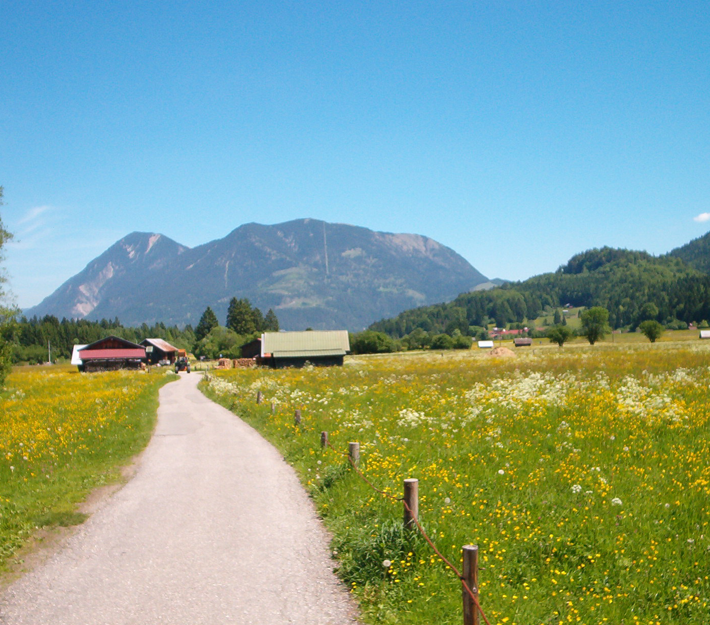
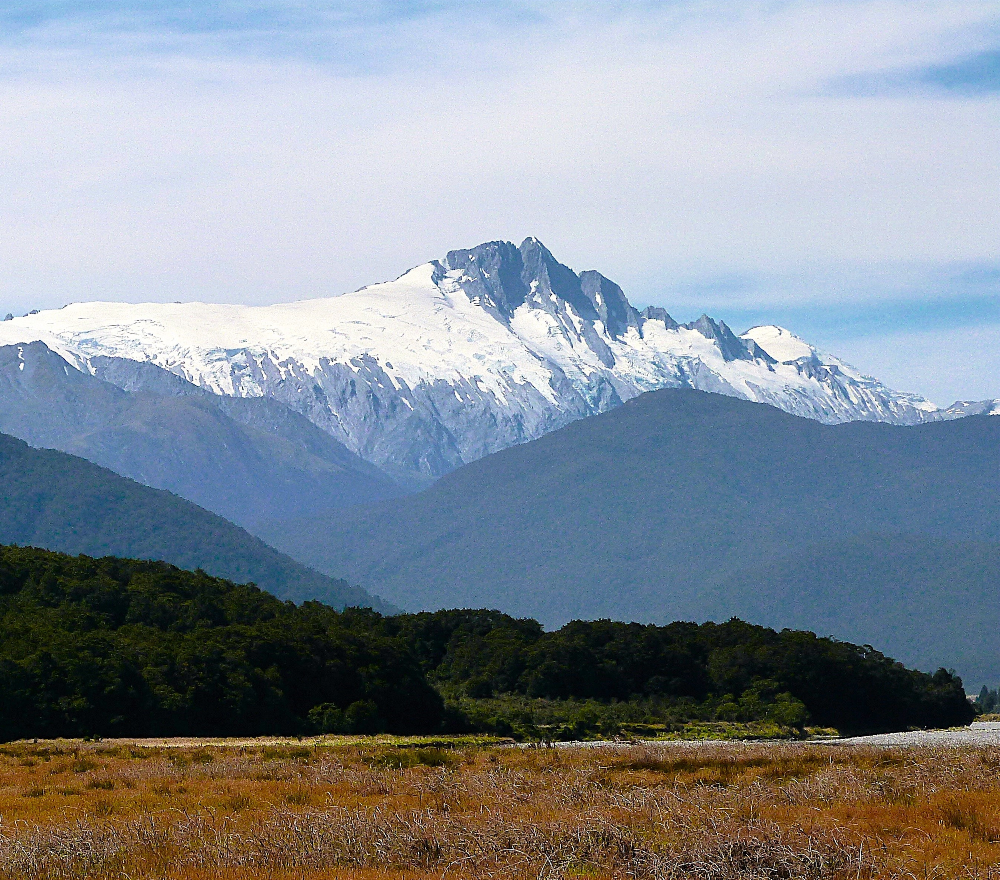

Góry to moja pasja
Góry są bardzo ciekawe. Kocham góry od wielu lat i bardzo interesuję się górami. Jedyne czego w życiu pragnę, to podziwiać piękno gór
Moje ulubione góry

Wank
Mount Baldy

Mount Hooker
FAQ
Często zadawane pytania
Co ci się podoba w górach?
Uwielbiam górach to, jak są spiczaste, chociaż kocham również bardziej gładkie szczyty.
Ile razy myślałeś dzisiaj o górach?
Nie umiem liczyć tak wysoko :3
Czy kochasz chodzić po górach?
Kto niby zadał takie pytanie? przecież to oczywiste!
Jaki jest twój ulubiony wiersz o górach?
Ten:
Góry, góry, kocham góry.
Zburzę dla nich wszystkie mury.
Całe dnie myślę o górach i szczytach
...
Dalej nie pamiętam, sorry :(
Jakie masz sny w nocy?
Zwykle takie o chodzeniu po górach, ale jak miałem bardzo stresujący dzień, to zdarza się, że śni mi się tylko jak przygotowuję się do wejścia na jakąś górę.